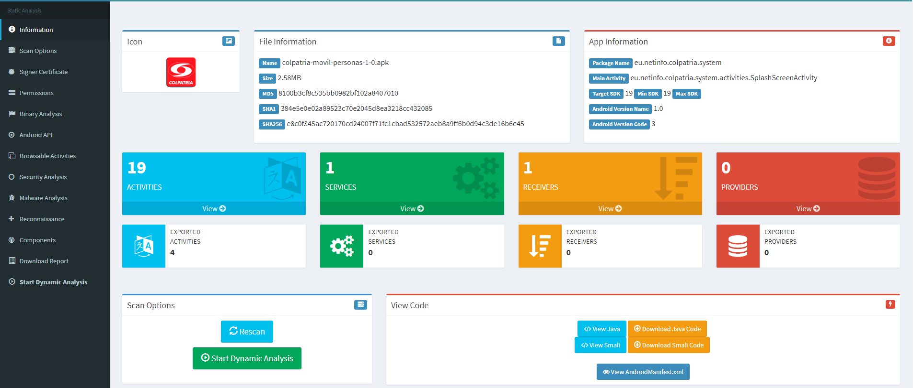
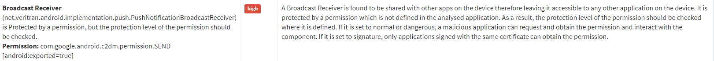
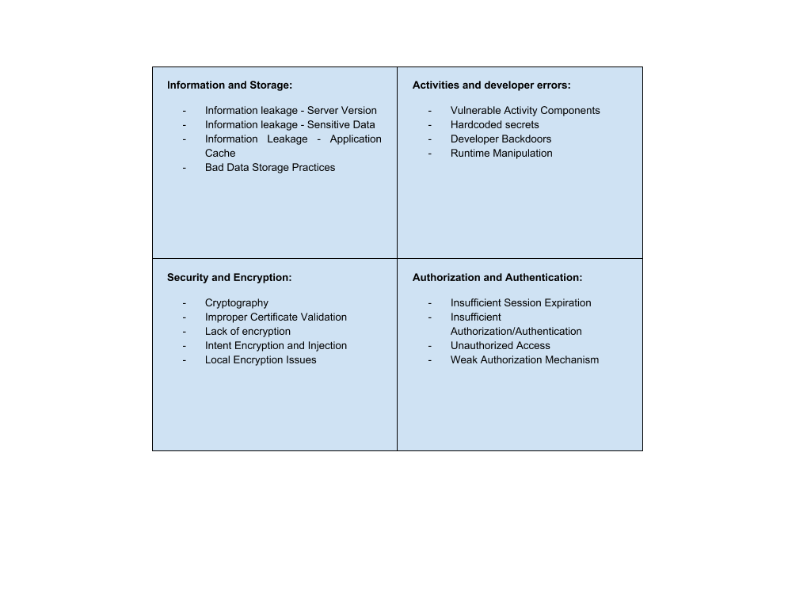
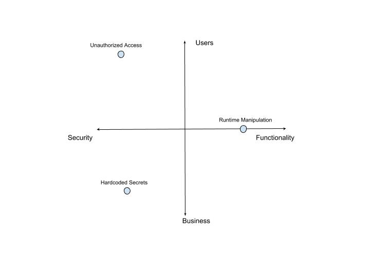

Universidad de Los Andes
Introducción
Objetivos
Investigación
Conclusiones parciales
Debilidad en procesos o configuración. Llevan a fallos de confidencialidad, integridad o disponibilidad.
Colombia: más de 300 aplicaciones financieras, más de 100 de los bancos registrados
Identificar vulnerabilidades recurrentes en aplicaciones financieras del país
Catalogar vulnerabilidades de acuerdo a como afectan al usuario y a la empresa
Establecer un orden de seguridad en aplicaciones financieras colombianas
Explotar con éxito vulnerabilidades para así encontrar métodos de mitigación adecuados
Análisis de seguridad
Hallazgo de vulnerabilidades
Catalogación de vulnerabilidades
Asignación a cuadrante

Se encuentran vulnerabilidades comunes en temas de encripción y tráfico de datos
Los cuadrantes ayudan a mostrar el nivel de impacto a cada actor involucrado con la aplicación
Explotar vulnerabilidades encontradas puede ser de alto impacto positivo para la seguridad de las aplicaciones